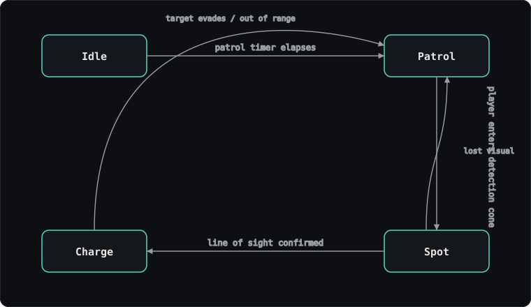

STRETCH
Overview
STRETCH is a 2D platformer built by a team of eight on a fully custom C++ engine — no Unity, no Unreal, engine code written by the team from the ground up. It was a stretch project: outside the normal coursework scope, undertaken to work at a larger team size and on lower-level systems than earlier modules required.
What I built
Three systems made up most of my contribution: the enemy's decision-making, the mechanism that let players (and the team, while testing) save and resume progress, and the tools that let the rest of the team see what the game was doing at runtime without attaching a debugger.
Enemy AI — finite state machine with directional detection

Four states, transitions driven by a directional detection check rather than raw distance.
The enemy runs a four-state machine — Idle, Patrol, Spot, Charge. The detection step isn't a simple radius check: it compares the player's position against the enemy's facing direction and a field-of-view angle, so an enemy can be walked past from behind without noticing. Losing sight during Spot or Charge drops the enemy back to Patrol rather than resetting straight to Idle, so it keeps searching near the player's last known position instead of forgetting instantly.
I chose an FSM over something heavier (behaviour trees, a full pathfinding-driven agent) because the scope was a handful of clearly distinct behaviours with simple transition conditions — a state machine kept it easy for the rest of the team to reason about and extend during production, which mattered more here than generality.
// Representative excerpt of the FSM update step — recreated for this writeup
// pending confirmation from the program office on sharing original coursework source.
void EnemyController::UpdateState(float dt) {
switch (currentState) {
case State::Idle:
if (idleTimer.Elapsed() > idleDuration) {
TransitionTo(State::Patrol);
}
break;
case State::Patrol:
FollowPatrolPath(dt);
if (CanSeePlayer()) {
TransitionTo(State::Spot);
}
break;
case State::Spot:
FaceTarget(lastKnownPlayerPos, dt);
if (!CanSeePlayer()) {
TransitionTo(State::Patrol);
} else if (spotTimer.Elapsed() > confirmDelay) {
TransitionTo(State::Charge);
}
break;
case State::Charge:
MoveToward(player->GetPosition(), chargeSpeed, dt);
if (!CanSeePlayer() || DistanceTo(player) > giveUpRadius) {
TransitionTo(State::Patrol);
}
break;
}
}
bool EnemyController::CanSeePlayer() const {
glm::vec2 toPlayer = glm::normalize(player->GetPosition() - position);
float facingDot = glm::dot(facingDirection, toPlayer);
return facingDot > cosf(glm::radians(fovHalfAngle))
&& DistanceTo(player) < detectionRange
&& HasLineOfSight(player->GetPosition());
}Excerpt is a reconstruction for illustration — swap in the real implementation once source-sharing is cleared.
Save / load and checkpoints
Progress is serialized to disk on checkpoint trigger and on manual save, and restored on load — player position, enemy states, collected items and level flags all round-trip through the same serialization path. Checkpoints write asynchronously so hitting one mid-play doesn't cause a frame hitch.
The harder part wasn't writing the data — it was deciding what counted as game state versus what could be recomputed on load. Keeping that boundary explicit is what kept save files small and made adding new saveable systems later a one-line registration rather than a rewrite.
Debug tooling
Built an ImGui-based debug overlay the rest of the team used directly — live state inspection for the enemy FSM (current state, timers, detection cone), a save-file inspector, and toggles for common test scenarios. Having this in the team's hands, not just mine, cut down on "can you check why the enemy is stuck" pings during production.
What I'd change
The FSM's transition conditions are hard-coded per state rather than data-driven, which was fine at four states but would get unwieldy past six or seven — a small transition table would make the next iteration easier to tune without recompiling. I'd also profile the line-of-sight check under load; it wasn't a bottleneck with a handful of enemies on screen, but I never confirmed where it would start to be one.